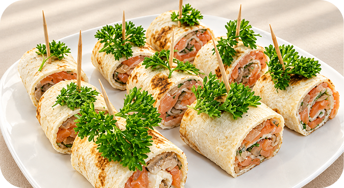
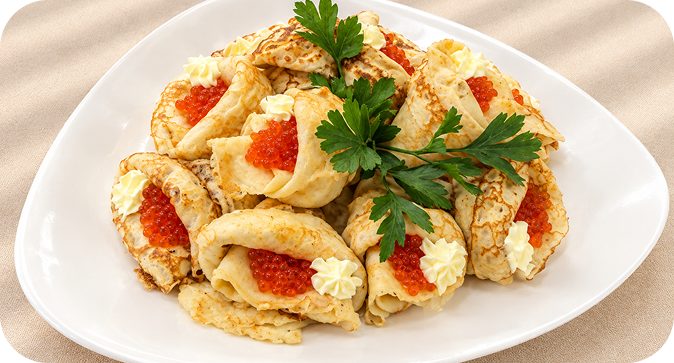
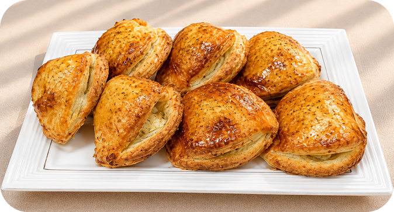
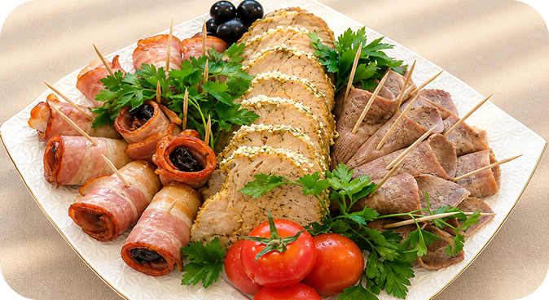

Меню
Фуршетное меню
Банкетное меню
Торты
Кофе-бар
Пирожки из цельнозерновой муки:
с мясом, с зеленым луком, с картофелем и грибами,
с капустой, с морковью, со свеклой..............................................................30 гр.
Бутерброды:
с форелью,с масляной рыбой, с сельдью,
с окороком, с грудинкой, с ветчиной, с языком.............................................35гр.
Перепечи:
с мясом, мясо-капустные, с капустой, с картофелем,
с грибами, с картофелем и грибами, с сыром,
с яйцом, луком зеленым.................................................................................35гр.

Мелкая выпечка:
Расстегай с рыбой..........................................................................................50гр.
Сдоба с курагой............................................................................................. 50гр.
Кокрок с яблоками.........................................................................................50гр.
Волованы:
с сырным кремом..........................................................................................20/20
с печеночным паштетом................................................................................20/20
с грибным жульеном.....................................................................................20/40
с салатом Французским (ананас,сыр.смет,масло.чес).................................30/30

Салаты в тарталетке:
Курочка ряба (огур.св,кур,сыр,яйцо, майонез)...........................................1/20 гр.
с кальмарами (кальм.огур.карт.лук.яйцо. горош.морк.майонез)...............1/20 гр.
с краб пал( кукур, лук, кр.пал яйцо майон).................................................1/20 гр.
минцар (печень,сыр,лук марин,майонез)...................................................1/20 гр.
эгоист (яйцо,сыр,морк,лук,орех,майонез)..................................................1/20 гр.
с языком(язык.огур..лук.яйцо.майонез)......................................................1/20 гр.
грибной сюрприз (грибы,лук,сыр,майон,)..................................................1/20 гр.
с мясным (мясо.карт.яйцо .горош.майонез)...............................................1/20 гр.
Рулеты из мяса, курицы и рыбы:
Рулет из кур с грибами..................................................................................50 гр.
Рулет из кур с черносливом..........................................................................50 гр.
Рулет из кур со специями..............................................................................50 гр.
Рулет из рыбы(горбуша) с сыром и перцем...................................................50 гр.
Рулет из форели с сыром и перцем..............................................................50 гр.
Шашлычки, канапе, брускетты и горячие закуски:
Шашлычки овощные.....................................................................................70 гр.
Фрукты на шпажке........................................................................................70 гр.
Шарик из сыра с зеленью на крекере...........................................................30 гр.
Профитроли со взбитыми сливками............................................................30 гр.
Мини-канапе (сыр, оливки)..........................................................................30 гр.
Мини-канапе (сыр, виноград).......................................................................30 гр.
Мини-канапе (сыр, перец)............................................................................30 гр.
Щука фаршированная................................................................................100/30
Щука фаршированная.................................................................................100гр.
Овощи для оформление блюд.....................................................................600гр.
Шашлычки на шпажке:
из форели................................................................................................70гр.
из красной и белой рыбы........................................................................70гр.
из сайда...................................................................................................70гр.
из курицы................................................................................................70гр.
Бутерброд на бород.хлебе с чернос.и грибами.............................................55 гр.
Бутерброд-канапе с тунцом..........................................................................58 гр.
Грибы в беконе с моцареллой.......................................................................50 гр.
Креветки на шпажке с огурцом свежим..........................................................40/1
Брускетта с форелью......................................................................................100/1
Канапе буженина в кунжуте с оливкой....................................................40/10/1/1

Пирожки печеные:
с мясом, мясо-капустные, с печенью, с капустой и яйцом,
с грибами и картофелем, с зеленым луком, яйцом.......................................35гр.
Профитроли:
с печеночным паштетом................................................................................10/20
с лососевым кремом......................................................................................10/20
с сырным кремом...........................................................................................10/20
с грибным салатом.........................................................................................30/30

Рулетики и закуски:
Рулетики из ветчины с сырным кремом.......................................................50 гр.
Рулетики из ветчины с морковью по-корейски............................................ 50 гр.
Рулетики из болгарского перца с грудинкой................................................35 гр.
Рулетики из печени с сырным кремом.........................................................50 гр.
Баклажаны, запеченные с сыром.................................................................50 гр.
Рулетики из баклажан с куриным филе...................................................... 50 гр.
Рулетики из баклажан с орехами.................................................................60 гр.
Рулетики из баклажан с овощной сальсой...................................................50 гр.
Рулетики из баклажан с морковью по-кор...................................................50 гр.
Рулетики из кабачков с куриным филе........................................................50 гр.
Рулетики из кабачков с овощной сальсой.....................................................50 гр.

Закуски на шпажке и картофель с рыбой:
Картофель печеный с сельдью (на шпажке).................................................30 гр.
Картофель печеный с сельдью (на шпажке).................................................40 гр.
Картофель печеный со скумбрией (на шпажке)..........................................30 гр.
Картофель печеный со скумбрией (на шпажке)..........................................40 гр.
Кальмары в тесте кляр..................................................................................50 гр.
Закрутка из языка с хреном..........................................................................30 гр.
Рулетики блинные с семгой...........................................................................35 гр.
Узелочек с мягким сыром.............................................................................45 гр.
Заливное:
Заливное из мяса..........................................................................................50 гр.
Заливное из языка.........................................................................................50 гр.
Заливное из кур.............................................................................................50 гр.
Заливное из рыбы:
сайда......................................................................................................50 гр.
судак.......................................................................................................50 гр.
форель....................................................................................................50гр.
Охотничья заливная закуска.........................................................................50 гр.
Овощное заливное с грибами.......................................................................50 гр.
Рыба и курица в тесте, слоёные закуски:
Филе куриное в тесте кляр............................................................................50 гр.
Рыба в тесте:
сайда......................................................................................................50 гр.
форель...................................................................................................50 гр.
Бриоши с грибами.........................................................................................60 гр.
Слойка со сливками и маком......................................................................20 гр.
Слоеные палочки с сыром и тмином............................................................30 гр.
Десерты и сладкие закуски:
Бананы в шоколаде.......................................................................................40 гр.
Бананы в орехах.............................................................................................35 гр.
Чернослив с апельсиновым желе и клубникой...............................................70/1
Сумашедшие блинчики.................................................................................105гр.
Меренговый рулет.........................................................................................50/20
Пирожки из цельнозерновой муки:
с мясом, с зеленым луком, с картофелем и грибами, с капустой, с морковью, со свеклой..............................................................30 гр.
Пирожки из цельнозерновой муки:
с мясом, с зеленым луком, с картофелем и грибами, с капустой, с морковью, со свеклой..............................................................30 гр.
Пирожки из цельнозерновой муки:
с мясом, с зеленым луком, с картофелем и грибами, с капустой, с морковью, со свеклой..............................................................30 гр.